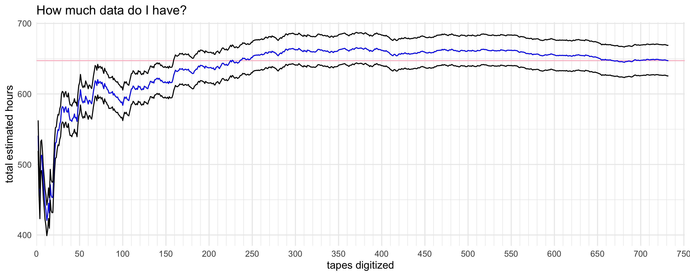
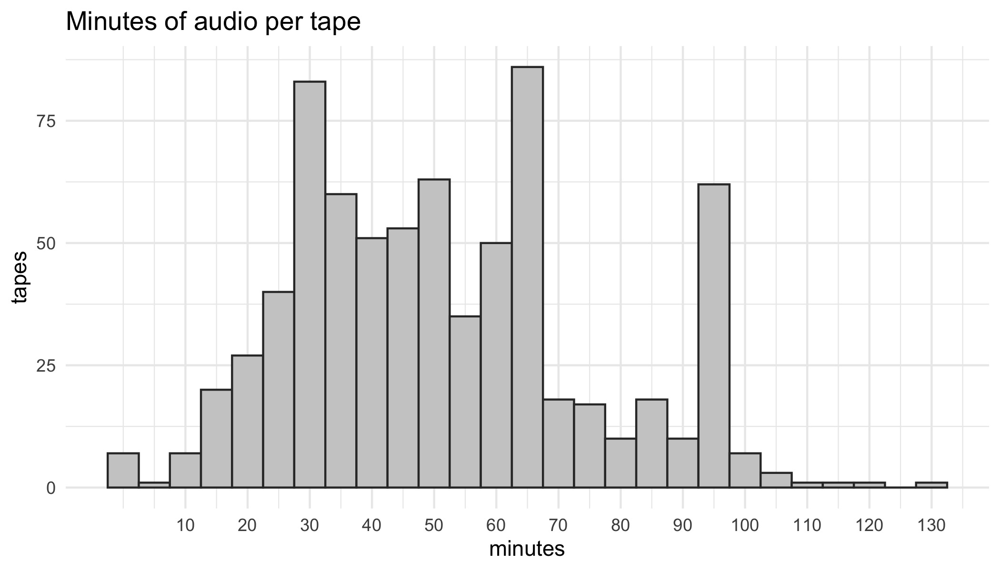
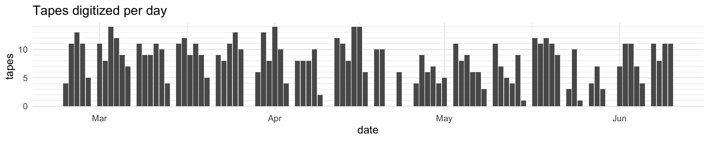
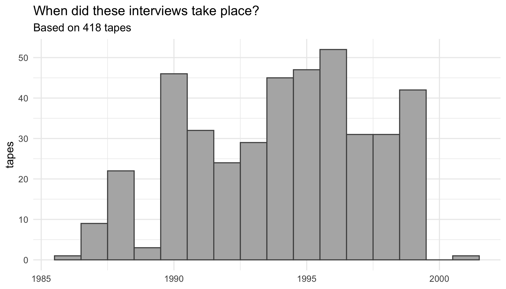
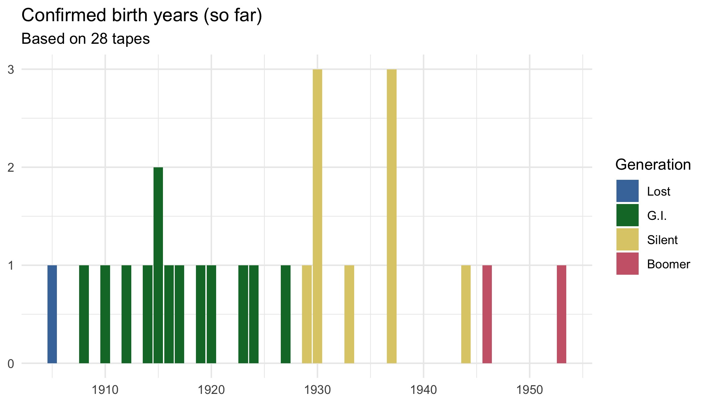
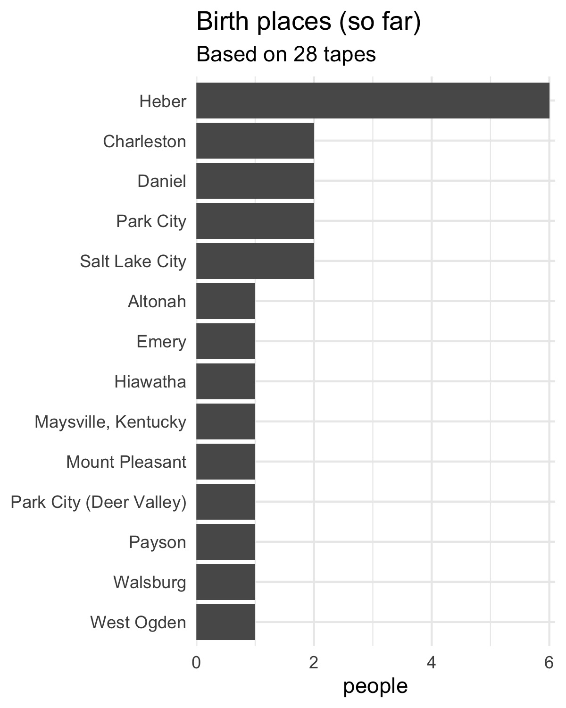

In February, I acquired a goldmine of data that I can use for linguistic analysis. Here’s an update on that project, now that I have some more solid numbers.

Cataloguing
Soon after getting the tapes, I had to organize them in some way. Since I don’t really know what I’m doing, I reached out to a few people I know who have worked with collections comparable in size to ask for their advice. (I also had to ask some Gen Xers how to handle and store cassette tapes because, well, I’ve never done that before 🤷🏻♂️).
So, over the course of a couple months, I took the tapes home in batches of fifty or so and cataloged them. By this, I mean that I labeled each with a sequential identifier and took photos of all sides of the tape, its case (if it had one), and any other slips of paper it came with.
While I was there, I wrote down whatever information was written on the outside of the tape. Things like the student’s name, the interviewee’s name, the date of the interview, their age, and the relationship between the two people (grandparent, great-grandparent, etc.). It looks like most of the tapes were done between 1986 and 1999. The ones from the 80s weren’t documented as consistently and I think Mr. Kohler caught on to that and asked his students to do a better job because the ones in the 90s were much more well-documented.
There are a couple really fun gems for me as I went through the names. First, I went to Heber in 2018 to collect some audio data myself. I talked to several older people then. As it turns out, some of these tapes contain recorded interviews with some of the people I talked to! Again, it’s a small town, so not a complete surprise, but it’s still pretty cool. Also, my sister-in-law has family from Heber, and sure enough, the collection contains interviews with about 10 of her distant relatives (great-grand-uncle, etc.). I’m sure I’ll discover some other gems as I dig deeper into this collection.
Digitizing
Thanks to a great tip from my colleague Chris Rogers, I found out that the Humanities Learning Resource Center in my building can digitize tapes. So I dropped everything and talked to them. Not only can they do it, but they said they do it for free! Wow!
So, I dropped off a box of tapes for them and two weeks later the files magically appeared in my Box drive! So I went and collected them, dropped off another several dozen and repeat the process over and over. It was a good morning when I woke up to the notification from Box saying that another 100 files were ready to download.
I want to just pause and do a huge shout-out to the student employees who processed all this audio! They had to hear the whir of the digitizing machine going for 8–9 hours days for 86 straight work days. Not to mention get up and flip the tape over or insert a new tape every 30–60 minutes, trim the audio, and upload the file. As someone who can’t stand unnecessary white noise or interruptions, that sounds like awful work to me. I’m sure if I had had to do it myself, it’d take me three or four times as long to get it all done and I wouldn’t be a happy camper.
File Structure
Something that I haven’t yet figured out though is the best way to store all this. When I worked with the Linguistic Atlas Project, it was simple: one speaker per file. Most interviews were longer and were recorded on multiple reels, so a single speaker may be on as many as ten or so files, but it was otherwise pretty well-organized.
This collection though is a hot mess. Here’s a list of the kinds of things I’m working with:
Many students did the cleanest route and interviewed one person and turned in one tape. Great.
However, some students went overboard and turned in multiple (as many as five!) tapes for a single interview. I welcome more data, so that’s not too bad.
To complicate things, sometimes the same person was interviewed by different students on different years. One person was interviewed six different times!
Sometimes, if the first interview wasn’t long enough, a student would conduct another interview with a different person. So there are two interviews and two different people on a single tape.
The messier route was if a student interviewed two grandparents at the same time. So the husband and wife would alternate back and forth. So one interview, but two people. This will be the trickiest to process.
And, of course, there are a few cases where multiple joint interviews are tagged on to each other, and this collection of interviews was spread across multiple tapes. Ugh.
Currently, my file structure is one-folder-per-tape, but as I get my hands dirty, I’m realizing I need to switch to a one-folder-per-person structure.
And of course, all this necessarily will need to come with multiple spreadsheets and some minor databasing to keep track of it all. Currently, I’ve got a spreadsheet for tapes, a spreadsheet for sides of tapes, and a spreadsheet for individuals. It’s not as clean as a single spreadsheet but it works.
Some numbers
So now that they’ve all been cataloged and digitized, I can give some more concrete numbers than I did in my previous blog post.
Number of tapes: 751
My estimate before was 600–700, so it’s a little more than I expected (which is great!)
Hours of audio: 631
I know that some of that is music (some students taped over mix tapes) so the number may go down as I listen to it all. I anticipated “only” 467 hours of audio at first, so this is 33% more than what I originally thought.
▼ I tried to estimate how much I’d end up with before they were all done, and it looks like by around 200 tapes or so I had a pretty good idea. The blue line is the predicted number and the black lines are some error. The pink line shows the true total.

Minutes per tape: 51.7 (on average).
My estimate in February was 40 minutes, so not only did I end up with more tapes than I expected, but they were 30% longer than I expected. I think the assignment was to have 30 minutes, but I didn’t expect so many students to go that much longer.
▼ Here’s the distribution of how many minutes of audio were on each tape (both sides). I’m pretty sure the peaks at 30, 65, and 95 or so reflect how much audio a cassette tape can hold.

Digitizing pace: 8.46 tapes a day (on average)
Since digitization happens in real-time, that means these students had this going for like nine hours a day. It took them 86 work days to do it all.
▼ Based on the creation date of the files, here’s how much work they did per day. They worked Monday through Saturday every week. You can see that after the semester ended in April it was slightly less consistent. Sometimes I wasn’t on campus the day they finished a box so they had to wait a day or two to get the next batch.

Number of people: 806
That’s just interviewees. If you add the 667 students, that’s 1473 total people. My guess is that that number will go down a small amount as I clean up the metadata. I’ve already had to change “Mr. Norman” and “Mrs. Norman” to their full names once I listened to them. Correcting any typos may change the number too if people were interviewed multiple times. I mentioned this in my last blog post, but Heber only had a few thousand people living in it at the time, so this is decent proportion of the total population of Heber. And if you just focus on the age group that this collection represents, that proportion goes up quite a bit!
There are a fair number of common family names like Jones, Smith, Johnson, McDonald, Thompson, Anderson, Davis of course. But there are also a lot of names like Giles, Bethers, Jensen, Web, Allred, Broadhead, Casper, Duke, Probst, and Young, which I presume are local families.
I will say right now that some of the students’ speech has some pretty distinctive linguistic features. These would be people born between about 1972 and 1987, or Gen Xers and early Millennials, who grew up in Heber. Unfortunately, I won’t have enough data from them to do much of an analysis.
Interview years: 1986–2001
That’s at least based on the 418 tapes where the interview date was written on the outside. Almost all were in April or May of each year. I suppose if I really wanted to I could track down some old yearbooks and find when the students were in 8th grade and get an exact year. I may find this information in the audio, but I haven’t listened to all of them yet. I may also be able to deduce it from people’s ages and birth years if they mention them.
▼ Notice there are many more in the 90s. I think it’s a sampling bias though. My guess is that later on in the project, the students received more explicit instructions to write that information than the students in the 1980s did.

Birth Years: 1905–1953
Again, that’s at least based on the 28 tapes I’ve listened to. This information was not written on the outside of the tape, so I can only get it in the audio itself. If they don’t say it explicitly, I can usually get enough information about the person to look up census records and get a confirmed date.
▼ Here’s the spread of confirmed birth years. They’re color-coded by generation cohort in case that’s meaningful to you. I estimated everyone would be born between 1900 and 1940, so that was pretty close being right.

Places of birth: mostly Wasatch County
Once again, that’s based on the 28 tapes so far. Wasatch County includes Heber, Charleston, Daniel, and Walsburg. Keep in mind these interviews took place in Heber, the county seat of Wasatch County.
▼ Several other places in Utah are represented so far too. 14 unique cities in just 28 tapes. Only one person so far was born outside of Utah. 
Looking Ahead
I won’t rehash what I wrote in my earlier blog post, but now that I have some more solid numbers, I can have better estimate for what I need to get this project done.
With 631 hours of audio and a rough estimate of 10 hours of work for every hour of audio, that’s 6,310 hours of manual labor needed to transcribe this all. Again, that’s about 35% more than I anticipated in February. At $15 per hour of work, that’s $94,650 in student wages.
If I can get some more stellar RAs like I had this semester, who worked 10 hours a week, that’s 631 student-weeks. At 15 weeks a semester, that’s 42 student-semesters of work. If I want this done in two years, that’ll take an average of 14 RAs each semester, including summers. Anyone who has worked with transcribers knows that retention is not great, so I’ll most certainly need more than 14 student helpers and they’ll most certainly not last two years.
This doesn’t even include my pipe dream of getting some grad student workers to form a core group of researchers. They’d help with supervising and training the transcribers, quality control, other aspects of the data processing (force-aligning, formant-extraction, file management), and analysis.
Am I already looking at external grants? Yes, yes I am. And am I already looking at different types of transcription software, methods, speech-to-text programs, and other things to speed this up and/or make it less costly? Yes, yes I am.
Immediate Plans
My first task though is to get as many of the gaps in my metadata spreadsheet filled as quickly as possible. I only know the birth years and places for 28 of the 806 people. I’d like to get a much more complete picture of what this collection is like before I start prioritizing which tapes to transcribe first. Sometimes this information is near the start of the interview but sometimes it’s not. Not quite sure how to get that information without just listening to all of them.
Fortunately, I got a grant from the Redd Center for Western Studies to go towards this project. It’s about the right amount needed to process enough data for a preliminary linguistic analysis. So I hope to get the ball rolling on some transcriptions and metadata extraction. Stay tuned for the first results at a conference near you!